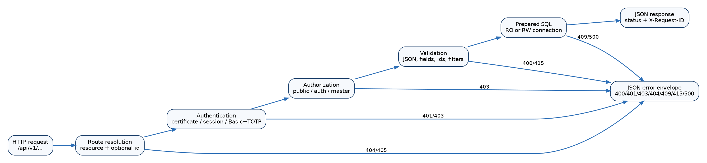
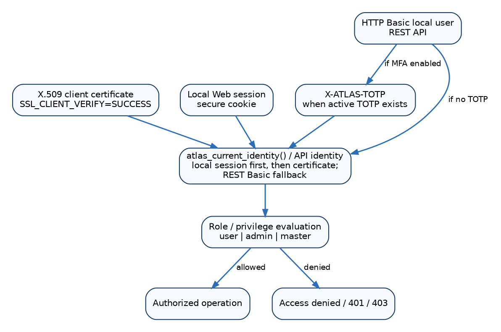
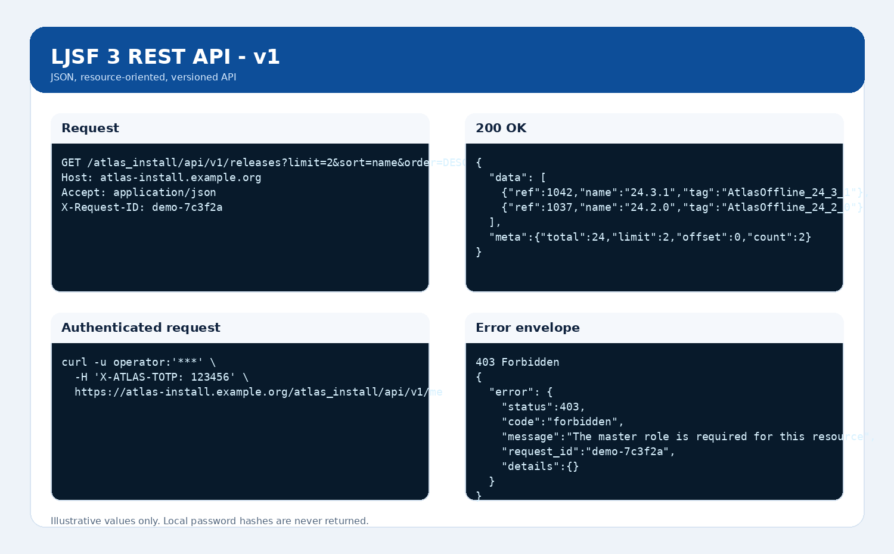

| Item | Value |
|---|---|
| Product | LJSF 3 - ATLAS Installation System |
| Application version | 3.0.0 |
| Package revision | r32 |
| API version | v1 |
| Base path | /atlas_install/api/v1 |
| Format | JSON / HTTPS |
Normative reference for REST API v1 included in package r32. Legacy endpoints remain available but are outside the REST contract.
/atlas_install/api/v1application/json; charset=UTF-8Cache-Control: no-storeX-API-Version: v1X-Request-ID
Figure: REST request lifecycle.
The API reuses the application identity model. Identity resolution
is: an existing local Web session; a valid X.509 client certificate;
then, as a REST-specific fallback, HTTP Basic using a local account. If
the local account has at least one active TOTP credential, Basic
authentication also requires X-ATLAS-TOTP.

| Mechanism | Transport | Requirements | Notes |
|---|---|---|---|
| X.509 certificate | TLS client certificate | TLS reaches Apache; SSL_CLIENT_VERIFY=SUCCESS; DN
mapped in user. |
Suitable for personal/robot certificates. |
| Local session | Secure Web cookie | Unexpired local session and enabled account. | Useful for browser-originated API calls. |
| HTTP Basic | Authorization: Basic ... |
Enabled local account, valid password,
must_change_password=0. |
Use only over HTTPS. |
| Basic + TOTP | Basic + X-ATLAS-TOTP: 123456 |
Required when at least one active TOTP exists. | Six digits; current TOTP slice +/- 1 is accepted. |
# Basic without TOTP
curl --fail-with-body -u operator:'PASSWORD' \
https://atlas-install.example.org/atlas_install/api/v1/me
# Basic with TOTP
curl --fail-with-body -u operator:'PASSWORD' \
-H 'X-ATLAS-TOTP: 123456' \
https://atlas-install.example.org/atlas_install/api/v1/me
# X.509
curl --fail-with-body --cert client.pem --key client.key \
https://atlas-install.example.org/atlas_install/api/v1/me401 authentication_required: no valid identity.
Response includes
WWW-Authenticate: Basic realm="LJSF 3 REST API".401 totp_required: Basic credentials are valid but TOTP
is missing/invalid.403 password_change_required: the local account must
change its password through the Web UI before API use.403 forbidden: valid authentication but insufficient
role.| Item | Behavior |
|---|---|
| GET collection | 200 with
{data:[...], meta:{resource,total,limit,offset,count}} |
| GET item | 200 with {data:{...}}; 404 if
not found |
| POST collection | Requires JSON body; 201 Created; Location
header; response contains created id and location |
| PATCH item | Partial update; 200 with the updated resource |
| PUT item | Currently has the same supplied-field partial-update semantics as PATCH; it is not a full replacement |
| DELETE item | 204 No Content; 404 if missing;
409 on database conflicts |
| OPTIONS | Returns supported method names; router advertises GET, HEAD, POST, PUT, PATCH, DELETE, OPTIONS |
| HEAD | Accepted on read routes; web server may suppress the body as required by HTTP |
| Content-Type | POST/PUT/PATCH with a non-empty body require
application/json; otherwise 415 |
| Unknown JSON field | 400 unknown_field; immutable keys are also rejected on
update |
| Arrays/objects in fields | Rejected with 400 invalid_field; resource fields are
scalar |
| Caching | All API responses send Cache-Control: no-store |
{
"error": {
"status": 400,
"code": "invalid_request",
"message": "...",
"request_id": "7c3f2a9b...",
"details": {}
}
}| HTTP | Name | Meaning |
|---|---|---|
| 200 | OK | Successful read or update. |
| 201 | Created | Successful creation; use Location. |
| 204 | No Content | Successful deletion. |
| 400 | Bad Request | Invalid id/JSON/field/request. |
| 401 | Unauthorized | Missing authentication or TOTP required. |
| 403 | Forbidden | Insufficient role or password change required. |
| 404 | Not Found | Unknown route/resource/record. |
| 405 | Method Not Allowed | Method unsupported by route. |
| 409 | Conflict | Database constraint/conflict during write/delete. |
| 415 | Unsupported Media Type | Non-JSON request body. |
| 500 | Internal Server Error | Internal error; correlate request_id with logs. |
Every exposed field can be supplied as a query parameter for exact
matching (field=value). q performs
LIKE %q% only on the resource search fields.
limit defaults to 200 and is capped at 1000;
offset cannot be negative. sort must be an
exposed field or the primary key is used; order accepts
ASC or DESC, otherwise ASC.
curl 'https://atlas-install.example.org/atlas_install/api/v1/releases?limit=100&offset=0&sort=name&order=DESC&q=24.3'| Resource | DB table | Key | GET | Write | q fields |
|---|---|---|---|---|---|
| releases | release_data | ref | public | authenticated user | name, tag, package, comments |
| sites | site | ref | public | authenticated user | cs, cename, name, atlas_name, alias, arch |
| requests | request | id | authenticated user | authenticated user | id, user_comments, admin_comments |
| tasks | task | ref | public | authenticated user | name, description, target |
| architectures | release_arch | ref | public | authenticated user | platform_type, os_type, gcc_ver, mode, description |
| targets | autoinstall_target | ref | public | authenticated user | name, description |
| infosys | bdii | ref | public | authenticated user | hostname, ns, lb, ld, wmproxy, myproxy |
| release-subscriptions | release_subscription | ref | authenticated user | authenticated user | sitename, pattern, comment |
| release-status | release_stat | ref | public | authenticated user | name, tag, status, comments |
| grids | grid | ref | public | authenticated user | name, description |
| facilities | facility | ref | public | authenticated user | name, description |
| site-types | site_type | ref | public | authenticated user | name, description |
| request-statuses | request_status | ref | public | master role | description |
| request-types | request_type | ref | public | master role | field, description, comment |
| users | user | ref | master role | master role | name, dn, email |
| local-users | atlas_local_user | id | master role | master role | username, first_name, last_name, email, role |
GET /Returns API name, version, documentation URL and resource list.
GET /healthAPI health only; it is not the full application readiness probe.
Response:
{"status":"ok","api":"v1","request_id":"..."}.
GET /meRequires authentication and returns the effective identity.
password_hash is always removed.
GET /openapiReturns a compact OpenAPI 3.1 document with paths and methods; this manual is the more detailed source for fields, authentication and semantics.

releasesDB table: release_data
Key: ref (integer)
Read access: public
Write access: authenticated user
q search fields:
name, tag, package, comments
Methods:
GET /releasesGET /releases/{id}POST /releasesPATCH /releases/{id}PUT /releases/{id}DELETE /releases/{id}Exposed fields:
| Field | DB type | Nullable | Writable | Description |
|---|---|---|---|---|
| ref | int(11) | NO | no | Numeric resource identifier. |
| name | varchar(50) | NO | yes | Canonical or displayed name. |
| build | varchar(15) | YES | yes | Canonical application-schema field; operational meaning depends on the resource. |
| typefk | int(11) | NO | yes | Type reference. |
| archfk | int(11) | NO | yes | Canonical application-schema field; operational meaning depends on the resource. |
| sw_archfk | int(11) | YES | yes | Canonical application-schema field; operational meaning depends on the resource. |
| userfk | int(11) | NO | yes | User reference. |
| obsolete | int(11) | YES | yes | Obsolete-release flag. |
| autoinstall | int(11) | YES | yes | Automatic-installation flag. |
| requires | varchar(30) | YES | yes | Canonical application-schema field; operational meaning depends on the resource. |
| dbrelease | varchar(10) | YES | yes | Canonical application-schema field; operational meaning depends on the resource. |
| installer_version | varchar(10) | YES | yes | Canonical application-schema field; operational meaning depends on the resource. |
| install_tools_version | varchar(10) | YES | yes | Canonical application-schema field; operational meaning depends on the resource. |
| sw_name | varchar(255) | YES | yes | Canonical application-schema field; operational meaning depends on the resource. |
| sw_revision | varchar(20) | YES | yes | Canonical application-schema field; operational meaning depends on the resource. |
| sw_physicalpath | varchar(255) | NO | yes | Canonical application-schema field; operational meaning depends on the resource. |
| sw_logicalpath | varchar(255) | NO | yes | Canonical application-schema field; operational meaning depends on the resource. |
| tag | varchar(100) | NO | yes | Software/release tag. |
| package | varchar(255) | NO | yes | Software package or descriptor. |
| comments | varchar(255) | YES | yes | Operational comments. |
| date | datetime | NO | yes | Date/time associated with the record. |
| cvmfs_available | int(11) | NO | yes | Canonical application-schema field; operational meaning depends on the resource. |
| critical | int(11) | NO | yes | Critical-release flag. |
| critical_validity_from | datetime | YES | yes | Canonical application-schema field; operational meaning depends on the resource. |
| critical_validity_to | datetime | YES | yes | Canonical application-schema field; operational meaning depends on the resource. |
| critical_description | varchar(25) | YES | yes | Canonical application-schema field; operational meaning depends on the resource. |
Examples:
curl https://atlas-install.example.org/atlas_install/api/v1/releases?limit=20&offset=0
curl https://atlas-install.example.org/atlas_install/api/v1/releases/123sitesDB table: site
Key: ref (integer)
Read access: public
Write access: authenticated user
q search fields:
cs, cename, name, atlas_name, alias, arch
Methods:
GET /sitesGET /sites/{id}POST /sitesPATCH /sites/{id}PUT /sites/{id}DELETE /sites/{id}Exposed fields:
| Field | DB type | Nullable | Writable | Description |
|---|---|---|---|---|
| ref | int(11) | NO | no | Numeric resource identifier. |
| cs | varchar(128) | NO | yes | Legacy computer-service identifier. |
| cename | varchar(50) | NO | yes | Legacy CE name. |
| name | varchar(30) | NO | yes | Canonical or displayed name. |
| atlas_name | varchar(30) | NO | yes | ATLAS site name. |
| tier_level | int(11) | NO | yes | Site tier level. |
| gridfk | int(11) | NO | yes | Grid reference. |
| facilityfk | int(11) | YES | yes | Facility reference. |
| activity_typefk | int(11) | YES | yes | Activity-type reference. |
| osname | varchar(128) | NO | yes | OS name. |
| osrelease | varchar(128) | NO | yes | OS release. |
| osversion | varchar(128) | NO | yes | OS version. |
| arch | varchar(20) | NO | yes | Canonical application-schema field; operational meaning depends on the resource. |
| tags | varchar(255) | YES | yes | Canonical application-schema field; operational meaning depends on the resource. |
| alias | varchar(128) | YES | yes | Canonical application-schema field; operational meaning depends on the resource. |
| swarea | varchar(255) | YES | yes | Canonical application-schema field; operational meaning depends on the resource. |
| fstype | varchar(15) | YES | yes | Filesystem type. |
| mountpoint | varchar(255) | YES | yes | Mount point. |
| capacity | int(11) | YES | yes | Capacity. |
| available | int(11) | YES | yes | Available space. |
| quota | int(11) | YES | yes | Quota. |
| status | int(11) | YES | yes | Application status. |
| attr | int(10) | NO | yes | Canonical application-schema field; operational meaning depends on the resource. |
| host_status | int(11) | NO | yes | Canonical application-schema field; operational meaning depends on the resource. |
| resource_status | int(11) | NO | yes | Canonical application-schema field; operational meaning depends on the resource. |
| last_activity | timestamp | YES | yes | Last recorded activity. |
Examples:
curl https://atlas-install.example.org/atlas_install/api/v1/sites?limit=20&offset=0
curl https://atlas-install.example.org/atlas_install/api/v1/sites/123requestsDB table: request
Key: id (string)
Read access: authenticated user
Write access: authenticated user
q search fields:
id, user_comments, admin_comments
Methods:
GET /requestsGET /requests/{id}POST /requestsPATCH /requests/{id}PUT /requests/{id}DELETE /requests/{id}Exposed fields:
| Field | DB type | Nullable | Writable | Description |
|---|---|---|---|---|
| id | varchar(128) | NO | no | Resource identifier. |
| bdiifk | int(11) | NO | yes | Canonical application-schema field; operational meaning depends on the resource. |
| sitefk | int(11) | NO | yes | Site reference. |
| relfk | int(11) | NO | yes | Release reference. |
| typefk | int(11) | NO | yes | Type reference. |
| userfk | int(11) | NO | yes | User reference. |
| adminfk | int(11) | YES | yes | Assigned administrator/operator reference. |
| statusfk | int(11) | NO | yes | Request-status reference. |
| force_run | int(11) | NO | yes | Force-execution flag. |
| request_date | datetime | YES | yes | Request date/time. |
| update_date | datetime | YES | yes | Last update date/time. |
| user_comments | varchar(255) | YES | yes | User comments. |
| admin_comments | varchar(255) | YES | yes | Administrative comments. |
Examples:
curl https://atlas-install.example.org/atlas_install/api/v1/requests?limit=20&offset=0
curl https://atlas-install.example.org/atlas_install/api/v1/requests/REQ-EXAMPLE-001tasksDB table: task
Key: ref (integer)
Read access: public
Write access: authenticated user
q search fields:
name, description, target
Methods:
GET /tasksGET /tasks/{id}POST /tasksPATCH /tasks/{id}PUT /tasks/{id}DELETE /tasks/{id}Exposed fields:
| Field | DB type | Nullable | Writable | Description |
|---|---|---|---|---|
| ref | int(11) | NO | no | Numeric resource identifier. |
| name | varchar(50) | NO | yes | Canonical or displayed name. |
| description | varchar(255) | YES | yes | Human-readable description. |
| target | varchar(20) | YES | yes | Task target. |
Examples:
curl https://atlas-install.example.org/atlas_install/api/v1/tasks?limit=20&offset=0
curl https://atlas-install.example.org/atlas_install/api/v1/tasks/123architecturesDB table: release_arch
Key: ref (integer)
Read access: public
Write access: authenticated user
q search fields:
platform_type, os_type, gcc_ver, mode, description
Methods:
GET /architecturesGET /architectures/{id}POST /architecturesPATCH /architectures/{id}PUT /architectures/{id}DELETE /architectures/{id}Exposed fields:
| Field | DB type | Nullable | Writable | Description |
|---|---|---|---|---|
| ref | int(11) | NO | no | Numeric resource identifier. |
| platform_type | varchar(16) | NO | yes | Platform type. |
| os_type | varchar(128) | NO | yes | Operating-system type. |
| gcc_ver | varchar(128) | NO | yes | GCC/toolchain version. |
| mode | varchar(10) | NO | yes | Build mode. |
| description | varchar(255) | NO | yes | Human-readable description. |
Examples:
curl https://atlas-install.example.org/atlas_install/api/v1/architectures?limit=20&offset=0
curl https://atlas-install.example.org/atlas_install/api/v1/architectures/123targetsDB table: autoinstall_target
Key: ref (integer)
Read access: public
Write access: authenticated user
q search fields:
name, description
Methods:
GET /targetsGET /targets/{id}POST /targetsPATCH /targets/{id}PUT /targets/{id}DELETE /targets/{id}Exposed fields:
| Field | DB type | Nullable | Writable | Description |
|---|---|---|---|---|
| ref | int(11) | NO | no | Numeric resource identifier. |
| name | varchar(15) | NO | yes | Canonical or displayed name. |
| description | varchar(255) | YES | yes | Human-readable description. |
Examples:
curl https://atlas-install.example.org/atlas_install/api/v1/targets?limit=20&offset=0
curl https://atlas-install.example.org/atlas_install/api/v1/targets/123infosysDB table: bdii
Key: ref (integer)
Read access: public
Write access: authenticated user
q search fields:
hostname, ns, lb, ld, wmproxy, myproxy
Methods:
GET /infosysGET /infosys/{id}POST /infosysPATCH /infosys/{id}PUT /infosys/{id}DELETE /infosys/{id}Exposed fields:
| Field | DB type | Nullable | Writable | Description |
|---|---|---|---|---|
| ref | int(11) | NO | no | Numeric resource identifier. |
| facilityfk | int(11) | NO | yes | Facility reference. |
| hostname | varchar(128) | NO | yes | Host name. |
| port | int(11) | NO | yes | TCP port. |
| ns | varchar(255) | YES | yes | Canonical application-schema field; operational meaning depends on the resource. |
| lb | varchar(255) | YES | yes | Canonical application-schema field; operational meaning depends on the resource. |
| ld | varchar(255) | YES | yes | Canonical application-schema field; operational meaning depends on the resource. |
| wmproxy | varchar(255) | YES | yes | Canonical application-schema field; operational meaning depends on the resource. |
| myproxy | varchar(255) | YES | yes | Canonical application-schema field; operational meaning depends on the resource. |
| preferred | int(11) | NO | yes | Preference flag. |
| enabled | int(11) | NO | yes | Enable flag (0/1). |
Examples:
curl https://atlas-install.example.org/atlas_install/api/v1/infosys?limit=20&offset=0
curl https://atlas-install.example.org/atlas_install/api/v1/infosys/123release-subscriptionsDB table: release_subscription
Key: ref (integer)
Read access: authenticated user
Write access: authenticated user
q search fields:
sitename, pattern, comment
Methods:
GET /release-subscriptionsGET /release-subscriptions/{id}POST /release-subscriptionsPATCH /release-subscriptions/{id}PUT /release-subscriptions/{id}DELETE /release-subscriptions/{id}Exposed fields:
| Field | DB type | Nullable | Writable | Description |
|---|---|---|---|---|
| ref | int(11) | NO | no | Numeric resource identifier. |
| sitename | varchar(50) | NO | yes | Site name. |
| userfk | int(11) | NO | yes | User reference. |
| pattern | varchar(50) | NO | yes | Subscription pattern. |
| date | datetime | NO | yes | Date/time associated with the record. |
| comment | varchar(255) | YES | yes | Canonical application-schema field; operational meaning depends on the resource. |
Examples:
curl https://atlas-install.example.org/atlas_install/api/v1/release-subscriptions?limit=20&offset=0
curl https://atlas-install.example.org/atlas_install/api/v1/release-subscriptions/123release-statusDB table: release_stat
Key: ref (integer)
Read access: public
Write access: authenticated user
q search fields:
name, tag, status, comments
Methods:
GET /release-statusGET /release-status/{id}POST /release-statusPATCH /release-status/{id}PUT /release-status/{id}DELETE /release-status/{id}Exposed fields:
| Field | DB type | Nullable | Writable | Description |
|---|---|---|---|---|
| ref | int(11) | NO | no | Numeric resource identifier. |
| sitefk | int(11) | NO | yes | Site reference. |
| name | varchar(50) | NO | yes | Canonical or displayed name. |
| userfk | int(11) | NO | yes | User reference. |
| pin | int(11) | YES | yes | Pin flag. |
| pinuserfk | int(11) | YES | yes | User who set the pin. |
| pindate | datetime | YES | yes | Pin date. |
| tag | varchar(100) | NO | yes | Software/release tag. |
| status | varchar(100) | NO | yes | Application status. |
| comments | varchar(255) | YES | yes | Operational comments. |
| date | datetime | NO | yes | Date/time associated with the record. |
Examples:
curl https://atlas-install.example.org/atlas_install/api/v1/release-status?limit=20&offset=0
curl https://atlas-install.example.org/atlas_install/api/v1/release-status/123gridsDB table: grid
Key: ref (integer)
Read access: public
Write access: authenticated user
q search fields:
name, description
Methods:
GET /gridsGET /grids/{id}POST /gridsPATCH /grids/{id}PUT /grids/{id}DELETE /grids/{id}Exposed fields:
| Field | DB type | Nullable | Writable | Description |
|---|---|---|---|---|
| ref | int(11) | NO | no | Numeric resource identifier. |
| name | varchar(10) | NO | yes | Canonical or displayed name. |
| description | varchar(255) | YES | yes | Human-readable description. |
Examples:
curl https://atlas-install.example.org/atlas_install/api/v1/grids?limit=20&offset=0
curl https://atlas-install.example.org/atlas_install/api/v1/grids/123facilitiesDB table: facility
Key: ref (integer)
Read access: public
Write access: authenticated user
q search fields:
name, description
Methods:
GET /facilitiesGET /facilities/{id}POST /facilitiesPATCH /facilities/{id}PUT /facilities/{id}DELETE /facilities/{id}Exposed fields:
| Field | DB type | Nullable | Writable | Description |
|---|---|---|---|---|
| ref | int(11) | NO | no | Numeric resource identifier. |
| name | varchar(10) | NO | yes | Canonical or displayed name. |
| description | varchar(255) | YES | yes | Human-readable description. |
Examples:
curl https://atlas-install.example.org/atlas_install/api/v1/facilities?limit=20&offset=0
curl https://atlas-install.example.org/atlas_install/api/v1/facilities/123site-typesDB table: site_type
Key: ref (integer)
Read access: public
Write access: authenticated user
q search fields:
name, description
Methods:
GET /site-typesGET /site-types/{id}POST /site-typesPATCH /site-types/{id}PUT /site-types/{id}DELETE /site-types/{id}Exposed fields:
| Field | DB type | Nullable | Writable | Description |
|---|---|---|---|---|
| ref | int(11) | NO | no | Numeric resource identifier. |
| name | varchar(50) | NO | yes | Canonical or displayed name. |
| description | varchar(255) | NO | yes | Human-readable description. |
Examples:
curl https://atlas-install.example.org/atlas_install/api/v1/site-types?limit=20&offset=0
curl https://atlas-install.example.org/atlas_install/api/v1/site-types/123request-statusesDB table: request_status
Key: ref (integer)
Read access: public
Write access: master role
q search fields:
description
Methods:
GET /request-statusesGET /request-statuses/{id}POST /request-statusesPATCH /request-statuses/{id}PUT /request-statuses/{id}DELETE /request-statuses/{id}Exposed fields:
| Field | DB type | Nullable | Writable | Description |
|---|---|---|---|---|
| ref | int(11) | NO | no | Numeric resource identifier. |
| description | varchar(128) | YES | yes | Human-readable description. |
Examples:
curl https://atlas-install.example.org/atlas_install/api/v1/request-statuses?limit=20&offset=0
curl https://atlas-install.example.org/atlas_install/api/v1/request-statuses/123request-typesDB table: request_type
Key: ref (integer)
Read access: public
Write access: master role
q search fields:
field, description, comment
Methods:
GET /request-typesGET /request-types/{id}POST /request-typesPATCH /request-types/{id}PUT /request-types/{id}DELETE /request-types/{id}Exposed fields:
| Field | DB type | Nullable | Writable | Description |
|---|---|---|---|---|
| ref | int(11) | NO | no | Numeric resource identifier. |
| level | int(11) | NO | yes | Level/precedence. |
| field | varchar(100) | NO | yes | Application field name. |
| description | varchar(128) | YES | yes | Human-readable description. |
| comment | varchar(255) | YES | yes | Canonical application-schema field; operational meaning depends on the resource. |
Examples:
curl https://atlas-install.example.org/atlas_install/api/v1/request-types?limit=20&offset=0
curl https://atlas-install.example.org/atlas_install/api/v1/request-types/123usersDB table: user
Key: ref (integer)
Read access: master role
Write access: master role
q search fields:
name, dn, email
Methods:
GET /usersGET /users/{id}POST /usersPATCH /users/{id}PUT /users/{id}DELETE /users/{id}Exposed fields:
| Field | DB type | Nullable | Writable | Description |
|---|---|---|---|---|
| ref | int(11) | NO | no | Numeric resource identifier. |
| name | varchar(50) | NO | yes | Canonical or displayed name. |
| dn | varchar(200) | YES | yes | X.509 Distinguished Name. |
| varchar(150) | YES | yes | Associated email address. | |
| priv_view | int(11) | NO | yes | Canonical application-schema field; operational meaning depends on the resource. |
| priv_insert | int(11) | NO | yes | Canonical application-schema field; operational meaning depends on the resource. |
| priv_update | int(11) | NO | yes | Canonical application-schema field; operational meaning depends on the resource. |
| priv_pin | int(11) | NO | yes | Canonical application-schema field; operational meaning depends on the resource. |
| priv_relsub | int(11) | NO | yes | Canonical application-schema field; operational meaning depends on the resource. |
| priv_critical | int(11) | NO | yes | Canonical application-schema field; operational meaning depends on the resource. |
| rolefk | int(11) | YES | yes | Canonical application-schema field; operational meaning depends on the resource. |
| valid_start | datetime | YES | yes | Canonical application-schema field; operational meaning depends on the resource. |
| valid_end | datetime | YES | yes | Canonical application-schema field; operational meaning depends on the resource. |
| enabled | int(11) | NO | yes | Enable flag (0/1). |
Examples:
curl https://atlas-install.example.org/atlas_install/api/v1/users?limit=20&offset=0
curl https://atlas-install.example.org/atlas_install/api/v1/users/123local-usersDB table: atlas_local_user
Key: id (integer)
Read access: master role
Write access: master role
q search fields:
username, first_name, last_name, email, role
Methods:
GET /local-usersGET /local-users/{id}POST /local-usersPATCH /local-users/{id}PUT /local-users/{id}DELETE /local-users/{id}Exposed fields:
| Field | DB type | Nullable | Writable | Description |
|---|---|---|---|---|
| id | BIGINT | NO | no | Resource identifier. |
| username | VARCHAR(64) | NO | yes | Local account name. |
| first_name | VARCHAR(100) | NO | yes | Canonical application-schema field; operational meaning depends on the resource. |
| last_name | VARCHAR(100) | NO | yes | Canonical application-schema field; operational meaning depends on the resource. |
| VARCHAR(254) | NO | yes | Associated email address. | |
| role | VARCHAR(32) | NO | yes | Local application role: user, admin, or master. |
| enabled | TINYINT(1) | NO | yes | Enable flag (0/1). |
| must_change_password | TINYINT(1) | NO | yes | When 1, password change is required before API use. |
| created_at | DATETIME | NO | yes | Creation date/time. |
| updated_at | DATETIME | NO | yes | Last update date/time. |
Examples:
curl https://atlas-install.example.org/atlas_install/api/v1/local-users?limit=20&offset=0
curl https://atlas-install.example.org/atlas_install/api/v1/local-users/123password is a special input-only field: accepted by
POST/PATCH/PUT, minimum 8 characters, converted into
password_hash, and never returned.
curl -u admin:'ADMIN_PASSWORD' -H 'Content-Type: application/json' \
-d '{"username":"operator","first_name":"API","last_name":"Operator","email":"operator@example.org","role":"user","enabled":1,"password":"StrongPass-2026"}' \
https://atlas-install.example.org/atlas_install/api/v1/local-users
curl -u admin:'ADMIN_PASSWORD' -X PATCH -H 'Content-Type: application/json' \
-d '{"role":"admin","must_change_password":0}' \
https://atlas-install.example.org/atlas_install/api/v1/local-users/5import requests
base = 'https://atlas-install.example.org/atlas_install/api/v1'
r = requests.get(f'{base}/releases', params={'q':'24.3','limit':50}, timeout=30)
r.raise_for_status()
for release in r.json()['data']:
print(release['ref'], release['name'], release['tag'])import requests
r = requests.get('https://atlas-install.example.org/atlas_install/api/v1/requests', timeout=30)
if r.status_code >= 400:
payload = r.json()
err = payload.get('error', {})
print('HTTP', r.status_code, err.get('code'), err.get('message'), 'request_id=', err.get('request_id'))Idempotency-Key header: clients must avoid blind POST
retries.PUT is intentionally patch-like in v1; do not assume
full replacement semantics.offset for
larger datasets.users
resourceDELETE /atlas_install/api/v1/users/{ref} performs a soft
deletion: it disables the user, clears active privileges, closes
validity, and records deleted_at. The row is not physically
removed because requests, logs, and other historical objects may
reference it. A successful request returns
204 No Content.